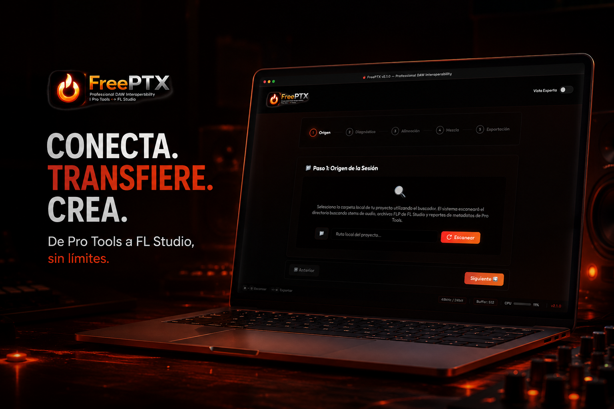

Break the barriers of your DAW Libera tus sesiones. Rompe las fronteras de tu DAW.
The ultimate professional tool for audio session interoperability. Automatically align stems, translate metadata, and seamlessly convert sessions without losing your creative flow. Lleva tus producciones al siguiente nivel sin perder tiempo. FreePTX alinea stems, convierte metadatos y traslada tus proyectos entre DAWs con precisión quirúrgica.


Powerful Capabilities Poder Sin Límites
Everything you need for a frictionless transition between industry-leading DAWs. Las herramientas más avanzadas diseñadas para hacer que el salto entre DAWs sea completamente transparente.
Smart Wizard Asistente Inteligente
Fluid, step-by-step interface guiding you through the session import process effortlessly. Una experiencia paso a paso que te lleva de la mano durante la importación sin que tengas que adivinar nada.
Auto-Alignment Sincronización Perfecta
Advanced peak detection, normalization, and phase-accurate alignment of your audio stems. Nuestro motor detecta picos y alinea tus pistas de audio con precisión de fase, dejándolas listas para mezclar.
Metadata Translation Traducción de Metadatos
Extracts and translates Pro Tools .txt and FL Studio .flp data into universal drag-and-drop MIDI files. Lee y convierte instantáneamente archivos de texto y proyectos (.flp) en marcadores MIDI universales.
Continuous Conversion Remuestreo de Alta Fidelidad
Intelligent and automatic audio resampling to match your destination project's sample rate. Tus audios se adaptan automáticamente a la frecuencia de muestreo de tu nuevo proyecto sin perder calidad.
Expert Dashboard Modo Experto
For advanced users: all panels are exposed in a unified dashboard including a pre-listening mixer. Toma el control total con un panel avanzado y un mezclador integrado para pre-escuchar antes de exportar.
Zero-Dependency Engine Motor Independiente
Standalone execution using native Python libraries without the need for complex web frameworks. Funciona al instante desde tu computadora. Cero instalaciones pesadas, cero frameworks complejos.
Latest Updates Últimos Cambios
Loading...Cargando...
Frequently Asked Questions Preguntas Frecuentes
Start Your Seamless Workflow Empieza a Crear Sin Barreras
Available for Windows and macOS. Completely self-contained, no complex dependencies required. Disponible ahora mismo para Windows y Mac. Un solo archivo listo para usar, sin configuraciones tediosas.